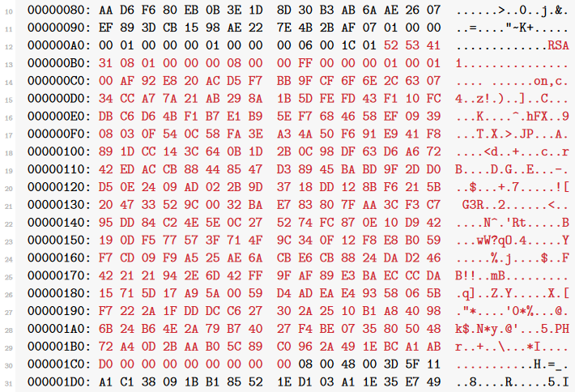

Breaking standard RDP security
Actually, there is not much to break. It is already completely broken by design, and I will tell you why.The way standard RDP security works is this:
– The client announces its intention to use the standard RDP security protocol.
– The server agrees and sends its own RSA public key along with a “Server Random” to the client. The collection of the public key and some other information (such as the hostname, etc.) is called a “certificate”. The certificate is signed using the Terminal Services private key to ensure authenticity.
– The client validates the certificate by using the Terminal Services public key. If successful, it uses theserver’s public key to encrypt the “Client Random” and sends it to the server.
– The server decrypts the Client Random with its own private key.
– Both server and client derive the session keys [6] from the Server Random and the Client Random. Thesekeys are used for symmetrically encrypting the rest of the session.
Can you spot the mistake here? How does the client get the Terminal Services public key? The answer is: It comespre-installed. That means it is the same key on every system. And that means the private key is also alwaysthe same! So it can be extracted from any Windows installation. In fact, we don’t even need to do that, since by now Microsoft has decided to officially publish it and we can simply look it up at https://msdn.microsoft.com/en-us/library/cc240776.aspx.
After the session keys have been derived if we can eavesdrop on the key, it does not matter how strong the encryption is at all.
So the plan is clear: When encountering the server’s public key, we quickly generate our own RSA key pair ofthe same size and overwrite the original key with it. Of course, we need to generate a signature of our public key using the Terminal Services private key and replace the original signature with it. Then, after the client successfully validates our bogus public key, we receive its Client Random. We decrypt it using our private key,write it down for later and re-encrypt it using the server’s public key. That’s it! From then on we can passively read the encrypted traffic between client and server.The only challenge is to properly parse the RDP packets.
This is the packet we're interested in, and the public key is highlighted:

The two bytes directly preceding it represent its length in little-endian byte order (0x011c). As we discussed before, the public key consists of the modulus and the public exponent.


All in little-endian byte order. We take note of the Server Random and replace the other two values.To generate our RSA key, we will useopenssl.
# openssl genrsa 2048 | openssl rsa -noout -text
Forging the signature is easy. We take the MD5 hash of the first six fields of the certificate, add some constantsaccording to the specifications [11] and encrypt it with the private part of the Terminal Services key [8]. This is how it is done in Python:
def sign_certificate(cert):
"""Signs the certificate with the private key"""
m = hashlib.md5()
m.update(cert)
m = m.digest() + b"\x00" + b"\xff"*45 + b"\x01"
m = int.from_bytes(m, "little")
d = int.from_bytes(TERM_PRIV_KEY["d"], "little")
n = int.from_bytes(TERM_PRIV_KEY["n"], "little")
s = pow(m, d, n)
return s.to_bytes(len(crypto["sign"]), "little")

We just need to re-encrypt it using the server’s public key and substitute it in the answer before passing it on.
After we derive the session keys, we can initialize the s-boxes for the RC4 streams. Since RDP is using a separate key for messages from the server than for messages from the client, we need two s-boxes. The s-box is an array of 256 bytes which are shuffled in a certain way that depends on the key. Then the s-box producesa stream of pseudo random numbers, which is xor-ed with the data stream. My Python implementation lookslike this:

As you can see, the protocol requires the key to be refreshed after 4096 encrypted packets. I haven’t bothered to implement it because I am only interested in the credentials as a proof-of-concept anyway.
Now we have everything we need to read all traffic. We are particularly interested in packets that containin formation about keyboard input events, i.e. key presses and key releases. What I gathered from the specification [12] is that the messages can contain several packets, and that there are slow path packets (start with 0x03) and fast path packets (first byte is divisible by four).
A keyboard input event [13] consists of two bytes, for example:

This would mean that the “S” key (0x1F) has been released (because the first byte is 0x01). I’m not doing a very good job at parsing those, because sometimes mouse movement events will be detected as keyboard events. Also, the scancode needs to be translated to a virtual key code, which depends on the keyboard type and keyboard layout. This seems highly non-trivial, so I’m not doing it. I just use the map referenced at [14]. It is good enough for a proof-of-concept.